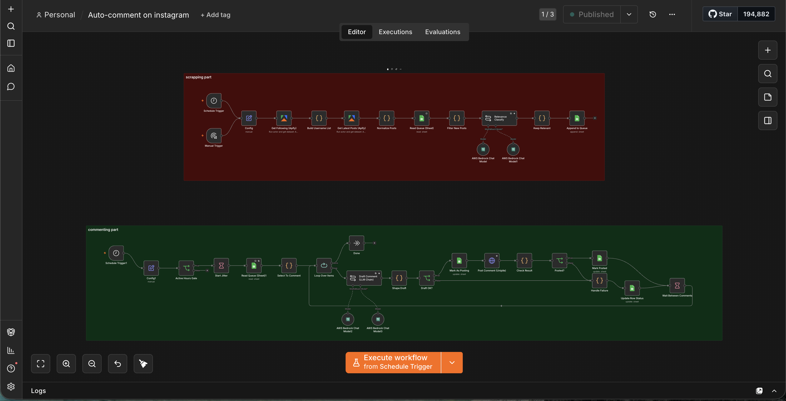

Instagram AI Auto-Comment
An agentic engine that scrapes target Instagram accounts, classifies each post's relevance with an LLM, and posts a natural, on-brand comment — but only when the post clears the bar.

01Overview
A two-part system — a scraping stage that pulls the latest posts from target Instagram accounts, and a commenting stage that classifies relevance with an LLM and only drafts + posts a comment when it's genuinely relevant, with failure handling on the post step.
02Business problem
Manual social engagement doesn't scale, and blind auto-commenting looks spammy and risks the account. The system needed to engage selectively — comment only on relevant posts, in a human voice.
03Architecture
04Workflow
06AI components
- Relevance classification with AWS Bedrock chat models (decides whether a post is worth engaging).
- An LLM chain drafts a natural, contextual comment.
- A should-post gate prevents low-relevance noise.
07Integrations
- Apify — Instagram scraping (following & latest posts).
- AWS Bedrock — classification + drafting.
- Unipile — posting the comment.
- A queue/store for new-post de-duplication.
08Technical challenges
- Filtering out already-seen posts to avoid duplicate comments.
- Making the relevance gate strict enough to stay non-spammy.
- Drafting comments that read human.
- Handling post-time failures without losing the queue.
09Reliability engineering
- Deployment: self-hosted n8n on a schedule.
- Monitoring: queue status + posted/failed flags.
- Error handling: an explicit failure branch on the post step; new-post filtering prevents duplicates.
- Validation: a relevance/should-post gate before any comment is drafted.
- Scalability: two decoupled stages (scrape vs comment) so each can run and retry independently.
10Business impact
11Lessons learned
The value isn't posting more — it's posting only when relevant. A strict LLM relevance gate is what separates useful engagement from spam.
12Future improvements
- Add per-account tone profiles.
- Track reply/like rates to tune the relevance threshold.
- Add a human-approval queue for borderline posts.